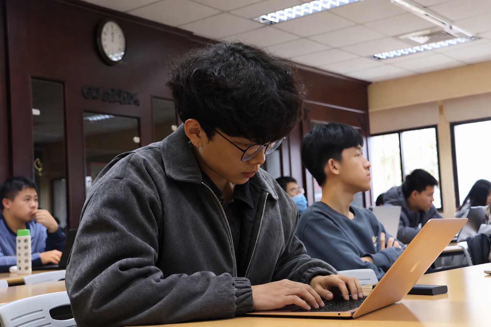
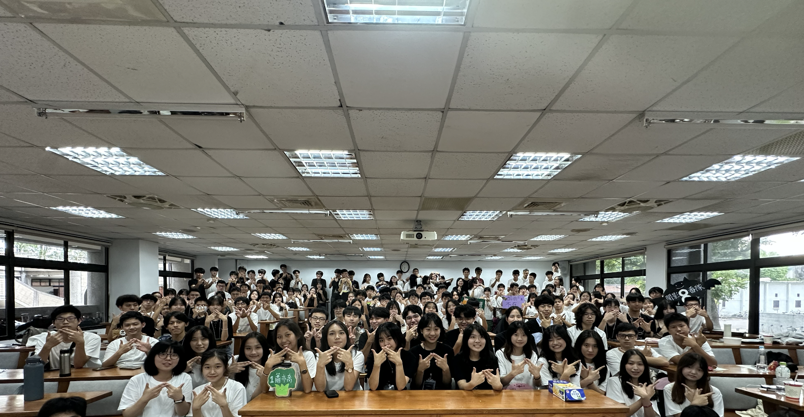

E03 / Public Relations & Administration
Public Relations & Administration — NTU IM Summer Camp
Participated in preparations for the 2025 and 2026 NTU Information Management Summer Camps. As a Public Relations & Administration Team Member in 2026, I coordinated with insurance and transportation providers and supported camp logistics and administrative arrangements.

NTU IM Summer Camp | Event Highlights
01
Responsibilities & Experience
I participated in the preparation and execution of the NTU Information Management Summer Camp in 2025 and 2026. In 2026, I served on the Public Relations & Administration Team, supporting external communication and administrative preparations.
My primary responsibilities included communicating with insurance and transportation providers, coordinating related arrangements, and working with teammates to prepare camp logistics.
This experience strengthened my skills in external communication, vendor coordination, and administrative execution, while providing practical experience in organizing student events as part of a team.
EVENT GALLERY
Event Gallery


